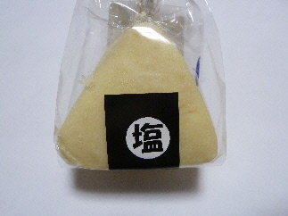
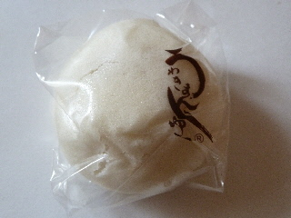
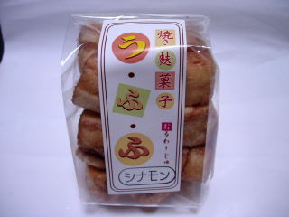

サンピコ江津で前に買ったお菓子「塩クッキー」。
2013/09/01
おにぎりみたいな可愛いパッケージの塩クッキーです。

塩物はやっぱり暑いときで、体を動かすときに食べたいですよね。
いつ食べようかなーって考えてるうちに秋がきました。
寒くなる前に食べよう！って食べました。
あ、意外と甘い。
口の中で溶ける感じの甘いクッキーに、ほんのり塩味がプラスしてある感じでした。
普通におやつでいただけました。
島根県江津市後地町995-1
2013/09/01
おにぎりみたいな可愛いパッケージの塩クッキーです。

塩物はやっぱり暑いときで、体を動かすときに食べたいですよね。
いつ食べようかなーって考えてるうちに秋がきました。
寒くなる前に食べよう！って食べました。
あ、意外と甘い。
口の中で溶ける感じの甘いクッキーに、ほんのり塩味がプラスしてある感じでした。
普通におやつでいただけました。
2012/07/22
サンピコ江津で何かいいお土産ものはないか？と探していたら見つかりました。

「うわきまんじゅう」です。
どうゆう意味の名前なんでしょうね？
パーケージをよく見ないで捨てちゃいました。
白あんの入った、薄皮まんじゅうみたいな商品でした。
江津のお土産に最適かも？って思って買って帰りました。
2010/05/16
新しくできた江津道の駅「サンピコごうつ」に行きました。
野菜が多く販売していて、お客さんで賑わっていました。

今日買ったのは麩菓子です。（150円）
大田市仁摩町の特定非営利活動法人「さざんか」さん製です。
軽い歯ごたえで食べやすいですね。ラスクみたいな感じですが、ラスク
よりも柔らかいです。
これはシナモン味で、甘くて美味しかったです。
他にも味違いの商品があったので、今度はそっちも食べてみたいです。
隣りにはドライブステーション 舞乃市があります。
http://www.asari-g.jp/mainoichi/index.html
こっちはガソリンスタンド、食堂、ラーメン屋、お土産物販売、コンビニがありました。
近くに色々と揃っていると便利でいいですね。